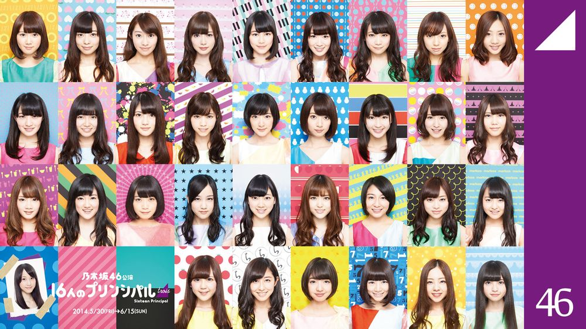
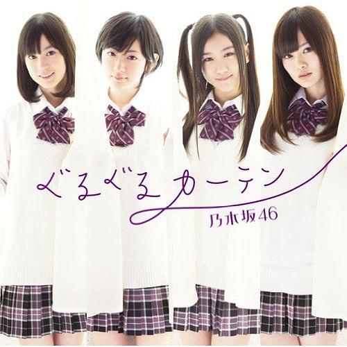

グループ名・乃木坂46の「乃木坂」は、レーベル会社のソニー・ミュージックエンタテインメント (SME) が当時所有していた東京都港区赤坂の「SME乃木坂ビル」を由来とする。同ビルは乃木坂46の最終オーディション会場として使用されたが、乃木坂46のマネジメント会社である乃木坂46合同会社（乃木坂46LLC〕の登記上の本店は、SME本社が入居する「SME六番町ビル」（千代田区六番町4番地5）に所在する。当初、ソニーは「六番町」というグループ名を提案していたが、秋元康が「乃木坂」を提案し、議論の結果「乃木坂」に決定した。乃木坂46の「46」という数字はAKB48より人数が少なくても負けないという意気込みを込めて総合プロデューサーの秋元康が命名した。乃木坂48と呼び間違えられることがある。
ソニー・ミュージックエンタテインメントグループ会社のデフスターレコーズに所属していたAKB48は、2008年のキングレコード移籍後にヒットしたため、ソニーミュージックの担当者が「やっぱり“逃した魚”は大きかったですよ」と語り、後の2010年にデフスターレコーズ所属時代の楽曲を収録したミュージック・ビデオ集『逃した魚たち〜シングル・ビデオコレクション〜』が発売されるほどだった。このような背景から、2011年にソニー・ミュージックエンタテインメントと秋元康プロデュースによる新たな女性アイドルグループが企画され、乃木坂46は結成された。乃木坂46結成時のメンバーにはモデルの伊藤万理華や深川麻衣、日テレジェニック2011候補生の井上小百合、ミスマガジン2011の衛藤美彩、元ももいろクローバーの柏幸奈、青春女子学園の川後陽菜や能條愛未、SPL∞ASHの中元日芽香、SPLASHの大和里菜、CHIMOの畠中清羅など芸能活動経験者が名を連ねた。
ソニーミュージックは、乃木坂46の発展に未来を賭けている。乃木坂46はコンセプトがないのをコンセプトに、コードネームをシャドー (shadow) とし、AKB48のシャドーキャビネット（shadow cabinet）として存在する。シャドーキャビネットとしての様相は、乃木坂46の1stシングル「ぐるぐるカーテン」のカップリング曲「会いたかったかもしれない」のミュージック・ビデオから出現し始めた。乃木坂46の「会いたかったかもしれない」は、AKB48の「会いたかった」をトレースした作品であり、AKB48の影を描いている。このため、AKB48「会いたかった」のミュージック・ビデオが真夏に撮影されたのに対し、乃木坂46「会いたかったかもしれない」のミュージック・ビデオは真冬に撮影された。乃木坂46が初めて撮影したミュージック・ビデオである「会いたかったかもしれない」には、当時AKB48の前田敦子が登場し、乃木坂46の生駒里奈に当時の自分を重ねるような視線を送るシーンがある。
また、乃木坂46はAKB48グループに属さないAKB48の公式ライバルとして存在する。AKB48が専用劇場を持つのに対し、乃木坂46は専用劇場を持たない。AKB48グループが選抜総選挙において投票を実施したのに対し、乃木坂46は『16人のプリンシパル』という舞台公演における配役決定において投票を実施した。これらの差別化は乃木坂46の1stシングル「ぐるぐるカーテン」のミュージック・ビデオにおける私立女子校の風景から提示され始めた。乃木坂46は専用劇場を持たないため、その世界観は乃木坂46の冠番組である『乃木坂って、どこ?』などの映像を通じて構築され、ミュージック・ビデオがその世界観を補完する役割を果たした。
乃木坂46運営委員会委員長の今野義雄によれば、乃木坂46はAKB48とは異なるかたちのエンターテインメントを目指すプロジェクトを掲げている。第一に「劇団」のようであることである。乃木坂46においてダンスは舞踏や舞踊として位置づけられ、ダンスを通じて劇を演じることによってひとつの作品を提示することを命題としている。振付面ではミュージカルのような芝居ができるグループとして、「差別化したい」「大御所でいきたい」という秋元康の意向から結成以来、1stシングルから5thシングルまで南流石が固定型で担当した。 第二に「文化的」であることである。CDの特典映像として収録されている個人PVは、乃木坂46のメンバーを用いて文化的な要素を引き出すための装置として位置づけられている。
音楽面では既存のアイドルグループと差別化を図るため、フレンチ・ポップスが採用された。歌衣装もその方向で制作され、「おしゃれなリセエンヌ」をイメージしていたことから、スタイリストに堀越絹衣が起用され、紫をキーカラーに淡い色調で彩られたクラシカルなフォルム、白い三つ折りソックスとワンストラップのエナメルシューズを定番とし、1stシングル「ぐるぐるカーテン」から多くの歌衣装を担当した。
音楽面でのフレンチ・ポップス路線は、乃木坂46の1stシングル「ぐるぐるカーテン」から3rdシングル「走れ!Bicycle」まで続いたが、4thシングル「制服のマネキン」から路線変更が施され、新しいイメージが打ち出された。「制服のマネキン」のミュージック・ビデオは、最多再生回数を記録し、のちに乃木坂46の作品群の中で「ヒット曲」とみなされるようになる。林修によれば、その次回作にあたる5thシングル「君の名は希望」の歌詞には「主人公の変化を暗示する言葉」が登場しており、グラウンド上でのやりとりを通じて「自我の目覚め」が起きている。
その後、グループ結成時からセンターを務めてきた生駒里奈は、6thシングル「ガールズルール」から白石麻衣とセンターを交代し、AKB48との兼任を決める。これに対し、西野七瀬はあまりいい気はしなかったとし、生田絵梨花は最初は反対だったと語った。また、白石麻衣は公式ライバルであるのにそのような兼任が果たして許されるのかと異議をとなえた。この見解の相違は物議を醸し、何をもって公式ライバルなのか、グループの存在意義が問われ、ファンの間で兼任反対の署名運動が巻き起こった。この結果、乗り越えなければならない目標（坂道）としてAKB48を挙げていた乃木坂46もまた、AKB48と同様の問題を抱えていることが明らかとなり、構造からの脱却を目指す方向へと移り変わっていった。
2017年は17thシングル「インフルエンサー」が自身初のミリオンセールスを達成。メンバーのソロ写真集も、爆発的な売上を記録した1位の白石麻衣『パスポート』を筆頭に6作がオリコン年間写真集ランキングトップ10にランクイン。11月7日、8日には「真夏の全国ツアー2017FINAL!」として、ひとつの目標であった東京ドームで初となるライブを開催。2日間で計11万人を動員し、年間のライブ総動員数は約46万人に達した。15本以上にのぼるCM出演数を含め、これらの数字はいずれも女性グループではトップクラスを記録。それを踏まえて名実ともにナンバーワンのアイドルグループであると評するメディアも現れた。年末には「インフルエンサー」が「日本レコード大賞」を受賞したことで、公式ライバルとして、ともに大賞候補にノミネートされていたAKB48との「直接対決」を初めて制するかたちとなった。